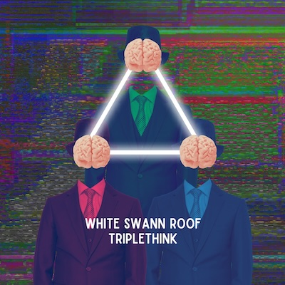
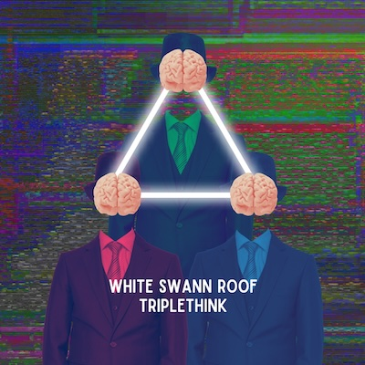

SUMMARY
What:
80s-inspired rock with blurning? vocals, sweeping? synths, danceable? beats and haunting? guitars.
Who:
Three piece electronic rock from K-W. Features veteran musicians formerly members of Bocce, Knock Knock Ginger.
Recommended if you like:
Violator era Depeche Mode
some modern band
some other hip reference
80s-inspired rock with blurning? vocals, sweeping? synths, danceable? beats and haunting? guitars.
Who:
Three piece electronic rock from K-W. Features veteran musicians formerly members of Bocce, Knock Knock Ginger.
Recommended if you like:
Violator era Depeche Mode
some modern band
some other hip reference
MUSIC
L.L.A.:
9 minute dance epic built on an instantly memorable piano hook
Spotify | Apple Music | Youtube
Bandcamp Homepage

Spotify | Apple Music | Youtube
Bandcamp Homepage

PUBLIC BIO
White Swann Roof is a low-ranking member of the ruling Party in London, in the nation of Oceania.
They are acting on behalf of the Sound Police to indoctrinate the public with the Party's new ideology: Triplethink.

Actual band photo
DETAILS
Members:
Mike Bond - Drums, Programming
Milosz Sikora - Vocals
Tony Salomone - Guitar
Hometown:
Waterloo, Ontario
Founded:
2024
Mike Bond - Drums, Programming
Milosz Sikora - Vocals
Tony Salomone - Guitar
Hometown:
Waterloo, Ontario
Founded:
2024
CONTACT
Email: secretcymbals@gmail.com